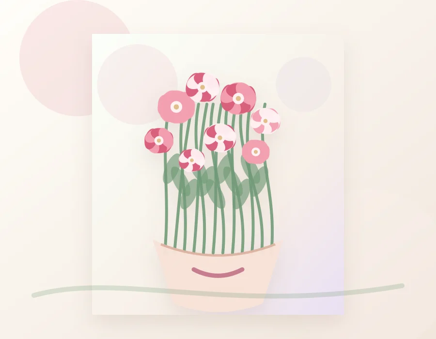
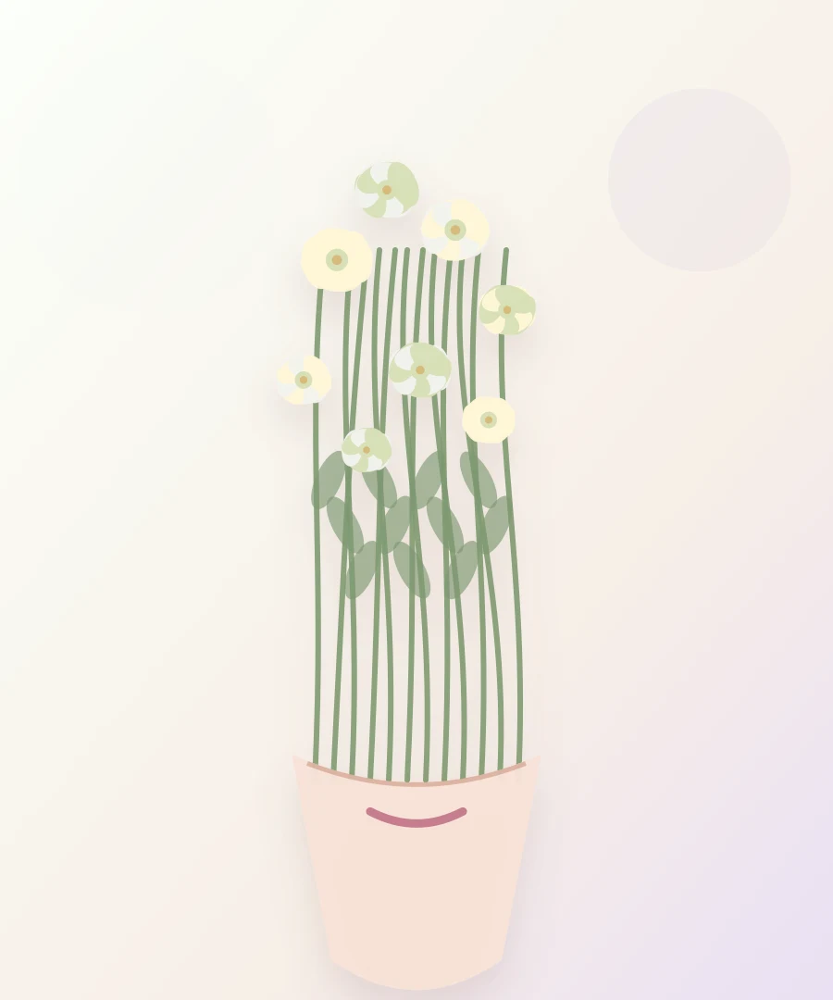
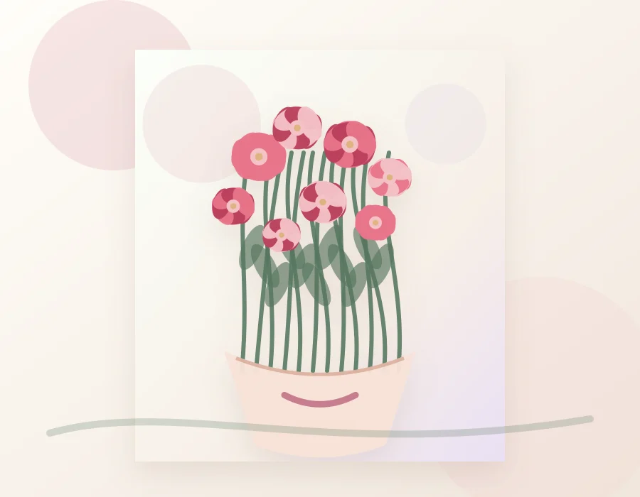
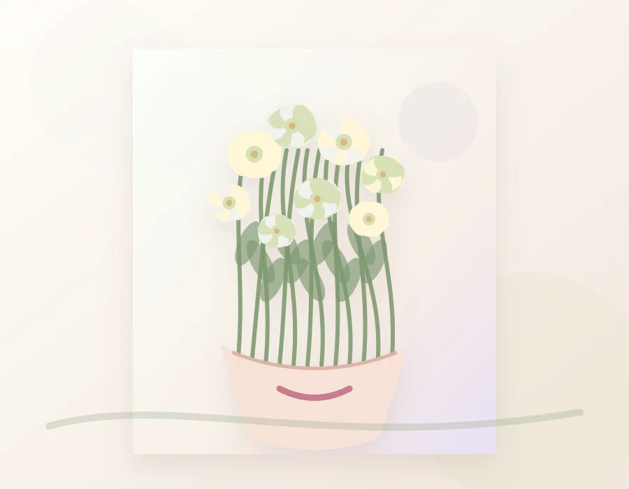
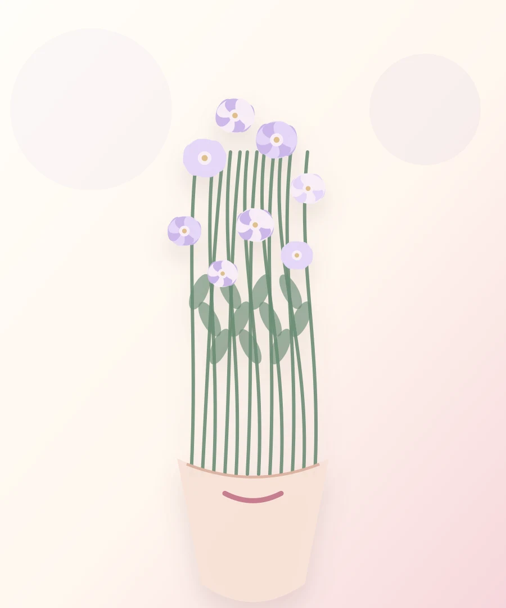

ГидКак выбрать букет на день рождения
Ориентируйтесь на характер получателя: яркие миксы для энергичных людей, светлые композиции для спокойного и элегантного подарка.
Блог
Короткие полезные материалы от флористов: без сложной терминологии, с практическими советами для подарков и ухода.

ГидОриентируйтесь на характер получателя: яркие миксы для энергичных людей, светлые композиции для спокойного и элегантного подарка.

УходЧистая ваза, свежий срез, прохладное место, смена воды каждый день и отсутствие фруктов рядом помогают цветам держаться заметно дольше.

ПоводыДля первой встречи лучше выбирать нежные букеты среднего размера: розы, эустому, диантус, сезонные цветы в лёгкой упаковке.

СвадьбаВажны платье, рост невесты, формат церемонии, палитра декора и запас времени для согласования сезонных цветов.
 Подарки
Подарки
Открытка, свеча, сладости или мини-набор ухода делают подарок более личным, но не перегружают впечатление.

ТрендыВ моде чистые формы, природная зелень, сложные пастельные оттенки и букеты, которые красиво живут в интерьере.
Совет флориста
Фразы «для мамы, нежно и не слишком ярко» или «для коллеги, строго, но красиво» помогают флористу быстрее попасть в нужное настроение. Мы переведём это в оттенки, форму и упаковку.
Попросить подбор